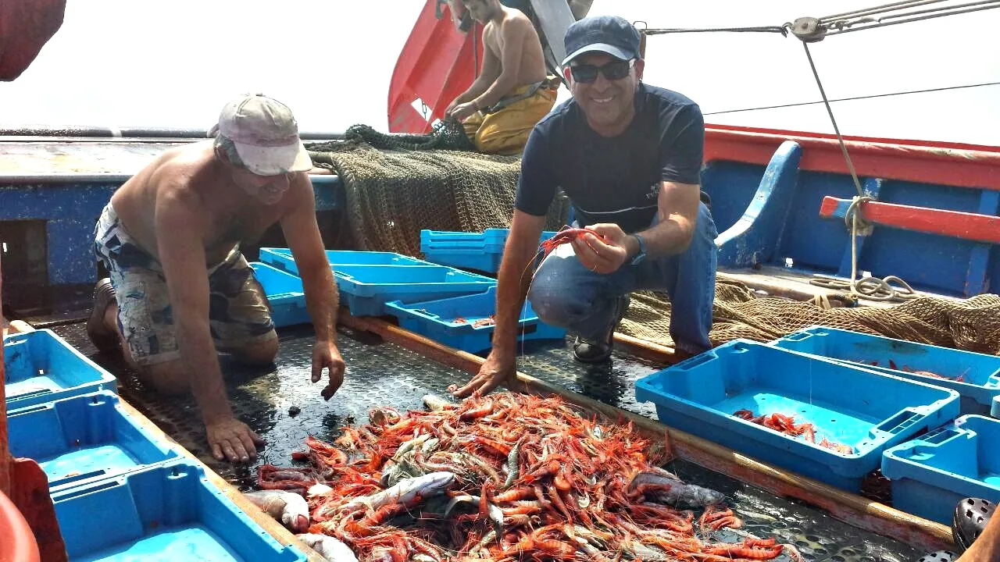
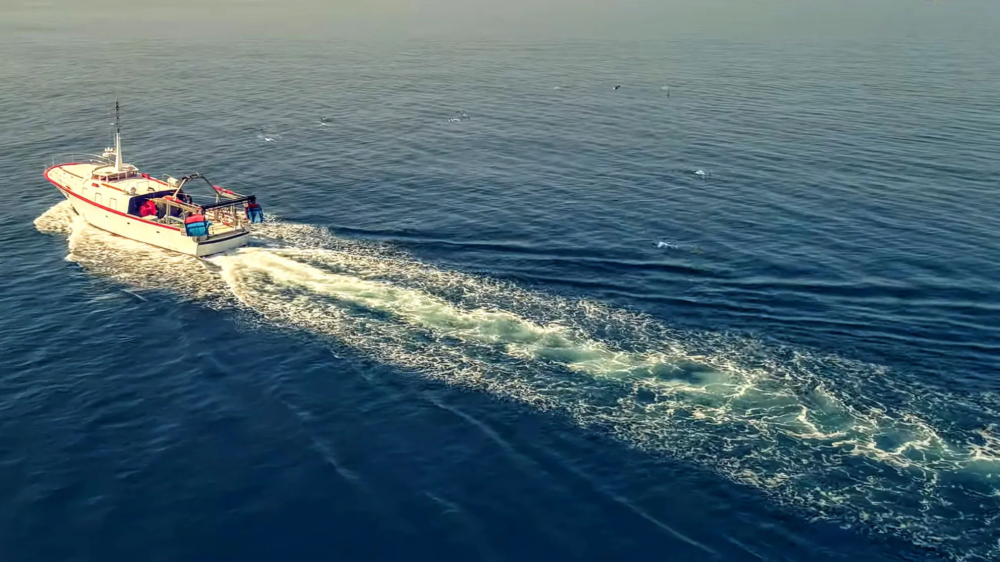
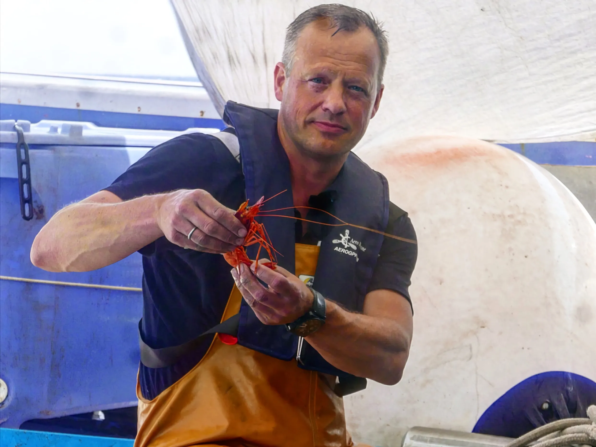
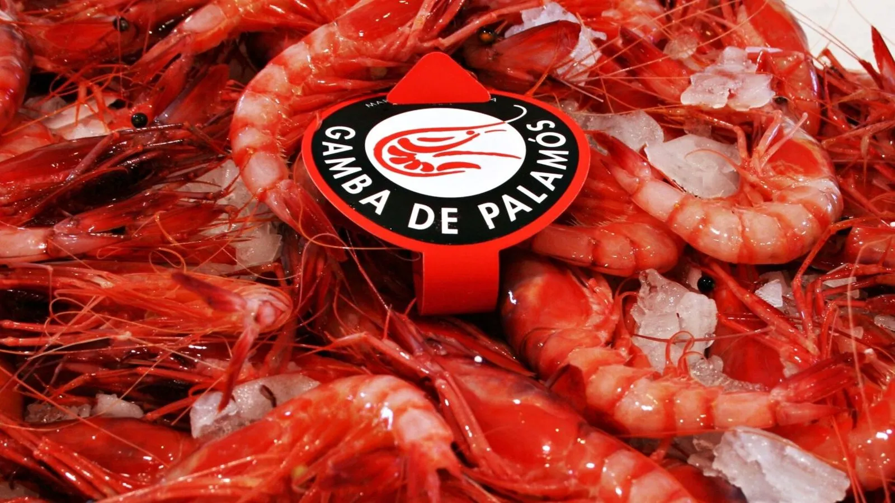
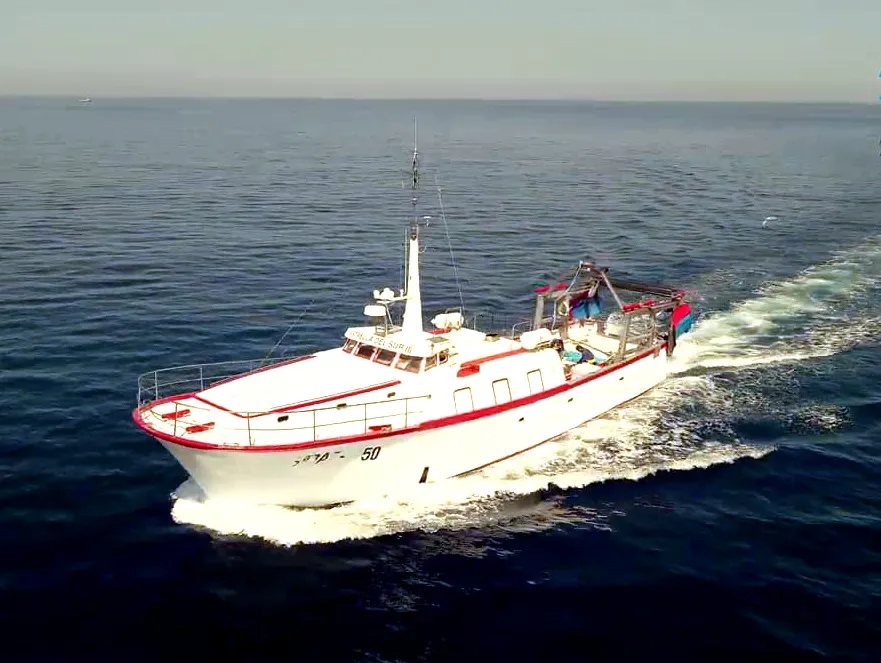

09 · Experiencia a bordo
Pesca Turisme Palamós
Pesca Turisme Palamós permite embarcar con profesionales y conocer una jornada de pesca desde dentro. Es una vía de acceso inicial para comprender tiempos, técnicas, riesgos y saberes antes de plantear un seguimiento más largo.





Propuesta
Realizar una salida con la cámara, con permiso previo, para observar la preparación del barco, el trabajo en cubierta, las capturas, los tiempos de espera y el regreso a puerto. Además de la experiencia turística, interesa conversar con la tripulación sobre cómo cambió el oficio y qué tensiones enfrenta hoy.
Contacto
Las reservas se gestionan a través del Servei d’Atenció als Visitants del Museu de la Pesca: 972 600 424 · infomuseu@palamos.cat · Moll Pesquer s/n, Palamós.